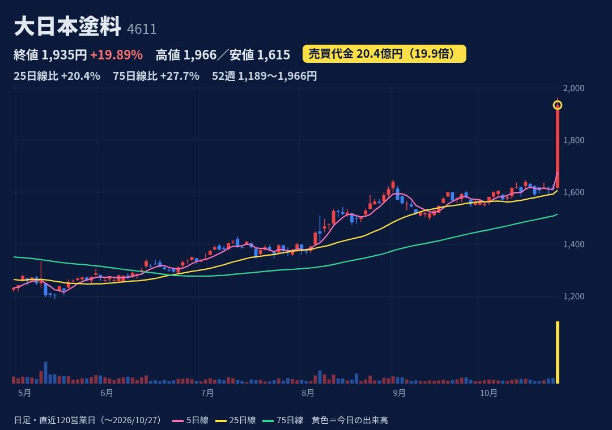
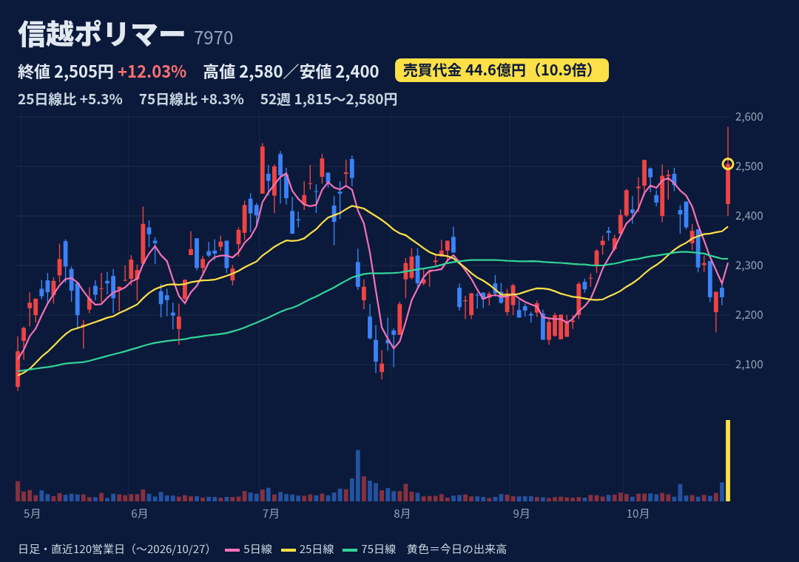
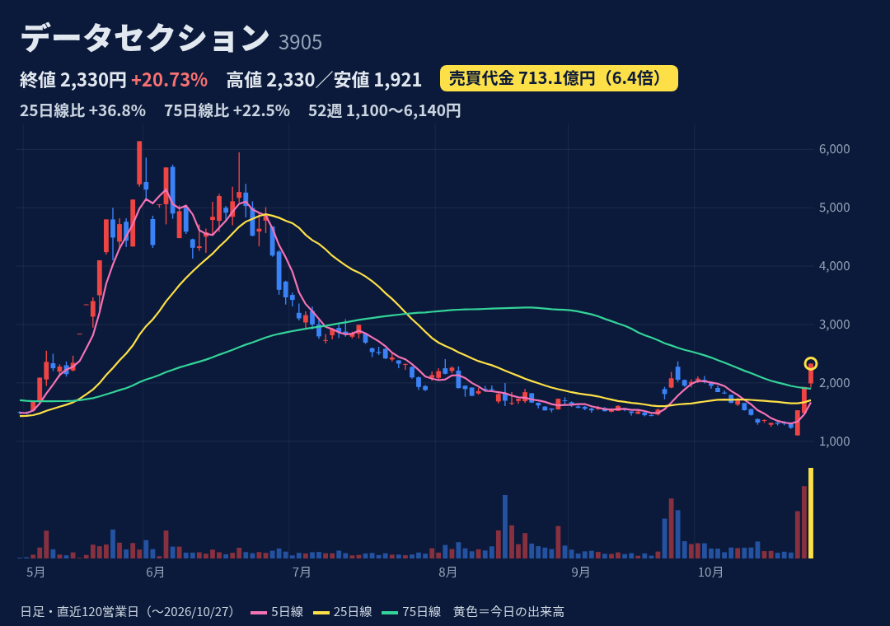
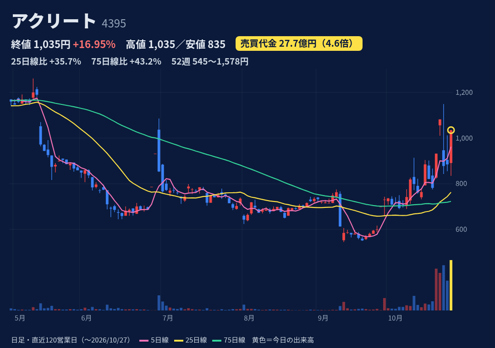
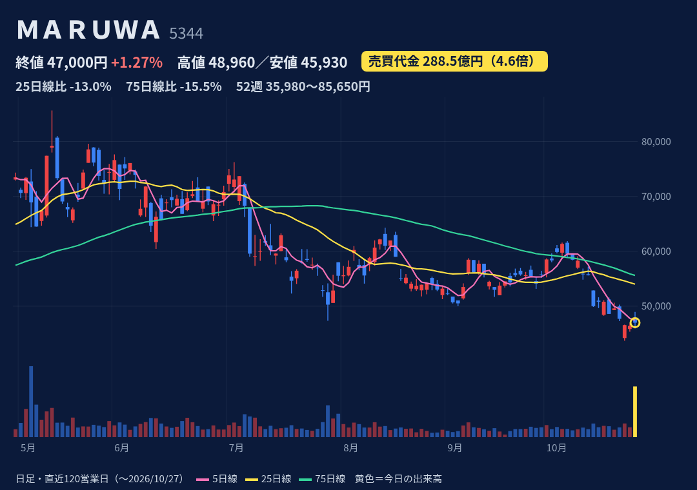
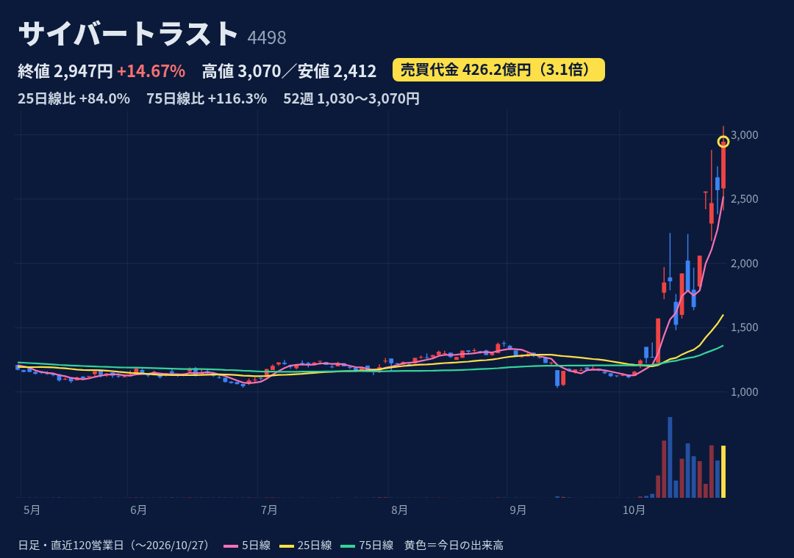

塗料大手。橋梁など構造物用・建築用・工業用塗料が主力。
10/27 14:00に業績予想を上方修正。通期の営業益は55→80億円（前期比2.1倍）、経常益は58→85億円。経常益は10期ぶりの最高益見通し。JIS処分の解除で構造物用塗料の販売が回復し、値上げも寄与。
1Q（4-6月）は売上254億円、営業益18.5億円（前年7億円）。上期予想も営業益21→45億円に修正（前年比2.5倍）。通期は売上1000億円、純益58億円。次の決算は11/6。
寄付1616円→高値1966円→終値1935円の大陽線（上ヒゲ短め）。9/1の高値1649円を抜いて52週高値を更新。25日線比+20%、75日線比+28%。この1年で+10%超の日は今日が初めて。
信用買残8.7万株、売残0.8万株、倍率10.4倍（10/26、急騰前）。日々公表・増担保は確認されず（JPXの規制一覧に掲載なし）。
一部は一過性の利益（子会社売却益4.1億円）。前期にJIS処分を受けた品質問題の再発防止が前提。低PER（9.5倍）の見直し買いが一巡すると反落しやすい。

信越化学グループの樹脂加工メーカー。半導体ウエハー容器、ラッピングフィルム、電子部品などを手がける。
10/26 15:30に中間決算と上方修正を発表。通期の営業益は160→182億円（+29.6%）、配当は66→72円に増配。同時に自社株買い（上限45万株・12.5億円、10/27〜12/31）も発表。理由は半導体関連容器とラッピングフィルムの好調。
上期は売上643億円（+14.4%）、営業益93.5億円（+31.6%）。7-9月の営業益は+58%。修正後の通期予想に対する進捗は51%。次の3Q決算は前年が1/26（今期の日程は未確認）。
寄付2424円（+8%の窓開け）→高値2580円→終値2505円。上ヒゲは値幅の約4割。高値は7/1の2547円を一時上抜いたが、終値はその下。25日線比+5%、75日線比+8%。7/24の1Q決算日は大商いで-8.9%だった。
信用買残24.2万株、売残5.9万株、倍率4.1倍（10/26）。買残は前日の11.1万株から倍増（発表当日の買い）。日々公表・増担保は確認されず。
大型の業績株で、低位・希薄化の懸念はない。自社株買いはストックオプション用で、規模も小さい（発行済の0.56%）。半導体需要の変動を受けやすい。

AIデータセンター／GPUクラウド事業へ大きく転換中（もとはデータ分析）。
10/23 12:15ごろ「AIインフラ・GPUサービス提供開始」を開示（9/18に受注した米AIインフラ企業向け、年1.75億ドル×3年）。10/26に説明会。10/27にも「大口案件の稼働開始」を開示（時刻は未確認）。
1Q（4-6月）は売上63億円（前年比9.5倍）、営業益48億円（前年は赤字）。通期予想は売上1622億円、営業益248億円で、営業益の進捗は約20%。9/18開示によると稼働は計画より遅れ、売上は下振れ・利益は上振れの見込み。次の決算は11/16予定（株探）。
10/23に1100円で寄り付き、後場にストップ高。10/26、10/27もストップ高で引けた（今日は高値引け）。52週高値6140円（5/29）からは-62%。25日線比+37%。5〜6月にも急騰の後、20日で-30〜45%という失速の前例がある。
信用買残1100万株（発行済の約27%）、売残232万株、倍率4.7倍（10/26）。日々公表銘柄で、日証金の注意喚起も出ている（J-Quants）。東証の増担保はなし。
株数が急増（2977万株→4135万株、今期だけで約4割増）。GPU取得の未払い2.55億ドルを前受金と借入1.24億ドルで賄う計画（9/18時点で協議中）。顧客名は非開示。空売り筋Wolfpackの指摘をめぐって訴訟中。

企業から個人へのSMS配信の代行が主力で、認証用途が多い。GPU・データセンター関連の取引にも参入。
今日（10/27）の材料は確認できず。直近の開示は10/22の再発防止策と社長の報酬減額だけ。セキュリティ・本人確認テーマや、急騰の後に乱高下している値動きの連想は推測。
前期（25/12期）は売上87.9億円、営業益5.3億円。1Q（1-3月）は売上+10.5%、営業益-24%。2Q決算は延期中で、半期報告書の期限は11/13。GPU取引の売上は総額計上が誤りとされ、訂正予定。
寄付891円→安値835円→ストップ高1035円で高値引け。10/23の高値1149円、52週高値1578円（2025/12）には届かず。25日線比+36%。2025年12月と2026年6月にも、急騰の後に20日で-19〜-24%という前例がある。
信用買残78.8万株（発行済の約1割）。売残0（貸借銘柄ではない）（10/26）。日々公表・増担保は確認されず。
特別調査委員会（9/28報告）は、GPU取引の売上の総額計上を誤りと認定し、財務諸表の訂正が必要とした（不正・粉飾は否定）。11/13までに半期報告書を出せるかが焦点。時価総額が小さく、値動きが荒い。

セラミック部品（次世代高速通信向け、車載・新エネ車向け、メモリ向けなど）。
日中の上げ（+1.3%、売買代金4.6倍）の材料は確認できず（決算前の思惑やガラス・土石の業種高は推測）。決算は大引け15:30に発表。上期の営業益は+62%、通期の営業益は337→383億円に上方修正。
上期は売上469億円（+41.7%）、営業益176億円（+62.4%、会社予想148億円を上回る）。7-9月は営業益2.3倍、利益率は40.7%。通期予想は売上1015億円、営業益383億円（+53%）。下期から瀬戸・土岐の新棟が稼働。
寄付47810円→高値48960円→終値47000円の陰線（上ヒゲ）。25日線比-13%、75日線比-16%。52週高値85650円（5/14）からは-45%で、52週の値幅では下から22%の位置。5/13の好決算で+14.8%の後、20日で-16%の前例がある。
信用買残8.0万株、売残0.4万株、倍率22.3倍（10/26）。日々公表・増担保は確認されず。
大型株で、低位・希薄化の懸念はない。PERは約22倍（株探、修正後のEPSベース）。株価は5月の高値から大きく下げた途中。好決算に反応して急騰しても、その後失速した前例がある。

電子認証（SSL/TLS証明書、電子署名iTrust、本人確認）とLinux/IoTセキュリティ。ソフトバンク傘下。
今日（10/27）の新しい開示は確認できず。10/22引け後に電子署名がエメラダの金融機関向け基盤に採用されたと発表。セキュリティ・ICチップ本人確認のテーマ株として人気化している（株探10/24特集）。
1Q（4-6月）は売上21.3億円（+12%）、営業益4.1億円（+31%）。通期予想は売上92.5億円、営業益18.6億円で、進捗は22%。2Q決算は10/29予定。
寄付2584円→高値3070円（一時ストップ高）→終値2947円の陽線（上ヒゲは値幅の2割）。52週高値を更新。9/11の安値1030円から約3倍。25日線比+84%、75日線比+116%。10/6以降、売買代金が平均の3倍以上の日が連続している。
信用買残106.6万株、売残6.0万株、倍率17.8倍（10/26）。10/26から日々公表銘柄。10/9以降は日証金の制限措置の対象（J-Quants）。東証の増担保はなし。
SSL/TLS証明書の発行を一時停止した件（9/10開示）は、Googleの承認は済んだがAppleは審査中。業績への影響額も精査中。株価は短期で過熱しており、PERは約39倍（株探）。
株価・出来高・信用残：取引所データ。材料：各社開示・各社報道。